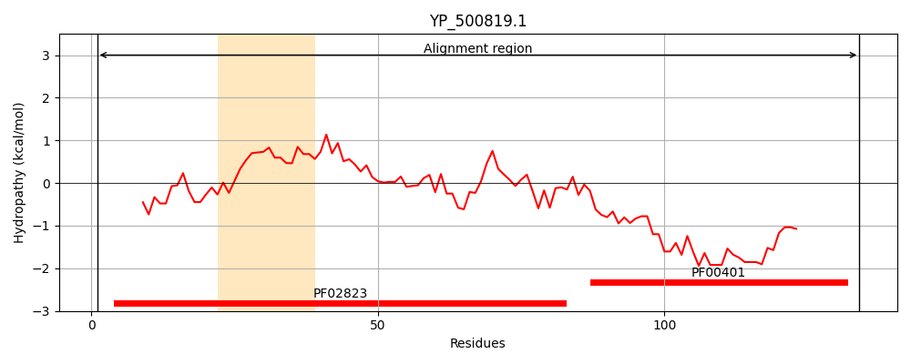
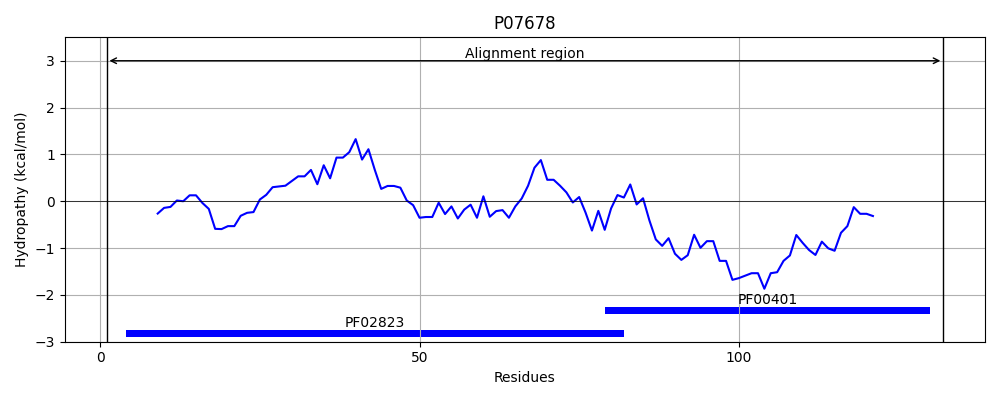
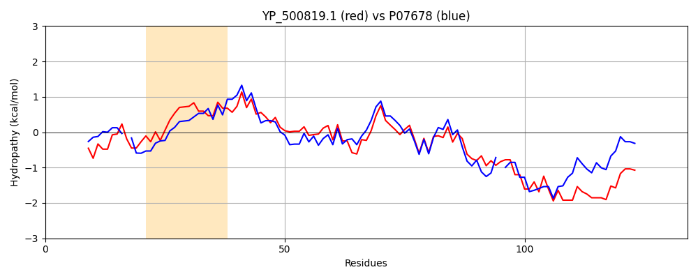

Hit Accession: P07678
Hit TCID: 3.A.2.1.14
Hit Description: gnl|BL_ORD_ID|8429 gnl|TC-DB|P07678|3.A.2.1.14 ATP synthase epsilon chain OS=Bacillus sp. (strain PS3) OX=2334 GN=atpC PE=1 SV=1
Mach Len: 134
e:0.000000
Query TMS Count : 1
Hit TMS Count: 0
TMS-Overlap Score: 0.000000
Predicted Substrates:CHEBI:5584;hydron
BLAST Alignment:
Score: 303 , Bit scores: 121 bits, E-value: 1.6e-36, Alignment length: 134, Percentage identity: 49
Query: 1 MNTLNLDIVTPNGSVYNRDNVELVVMQTTAGEIGVMSGHIPTVAALKTGFVKVKFHDGTEYIAVSDGFVEVRKDKVSIIVQTAETAREIDVERAKLAKARAESHLENDDDNTDIHRAERALERANNRLRVAELK 134
M T+++ +VTP+G VY D+VE+V ++ +GE+G++ GHIP VA L+ ++K T+YIAVS GF+EVR D V+I+ Q AE A +IDV RAK A+ + L++ D+ D RAE AL+RA NRL VAE+K
Sbjct: 1 MKTIHVSVVTPDGPVYE-DDVEMVSVKAKSGELGILPGHIPLVAPLEISAARLKKGGKTQYIAVSGGFLEVRPDNVTILAQAAERAEDIDVLRAK-ARKSGRTPLQSQQDDIDFKRAELALKRAMNRLSVAEMK 132 | Protein Hydropathy Plots: |
|---|
|  |  |
Pairwise Alignment-Hydropathy Plot:
|
|---|
|  |